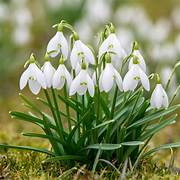
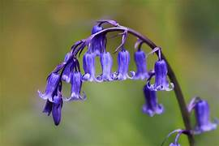
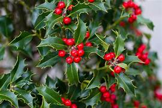
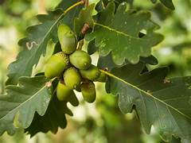
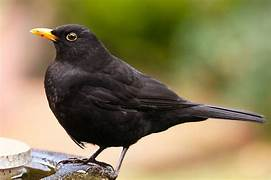
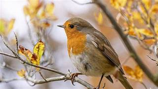
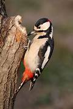
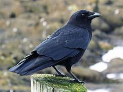
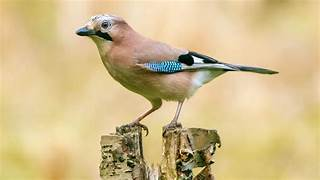

Wildflowers, Trees & Woodland Birds
Look up into the canopy, search across the woodland floor, and listen for birdsong in Queen Victoria Grove and Happy Valley. How many of these woodland treasures can you find?
Spring & Summer Flowers

Pale yellow petals with deep golden centres flowering along hedgebanks.

Cheerful trumpet flowers announcing the arrival of spring sunshine.

Delicate nodding white bells blooming in late winter woodlands.
Glossy star-shaped yellow flowers opening only on bright sunny mornings.

Drooping violet-blue bells forming fragrant carpets in ancient glades.
Historic Trees & Leaves

Lobed leaves and acorns; some oaks on the commons are over 200 years old!

Smooth silver-grey bark with prickly mast cups containing beech nuts.

Prickly evergreen leaves and bright red berries cherished by winter birds.

Broad 5-lobed leaves and winged 'helicopter' seeds that spin in the wind.
Woodland & Garden Birds

Jet-black feathers with a bright yellow beak; lovely melodious song.

Friendly little garden companion with an unmistakable red-orange breast.

Bright blue cap, yellow belly, and white cheeks; acrobatic feeder.

Larger with a glossy black head and bold black stripe down its yellow chest.

Chirping in sociable flocks in the hedgerows around the cricket pitch.

Pinkish-brown woodland bird with striking electric-blue wing patches; buries acorns!

Iridescent glossy plumage with tiny white speckles; incredible mimic.

Big, intelligent, all-black bird with a harsh 'caw' call patrolling the open turf.

Black, white, and crimson; drums loudly against dead birch tree trunks.

Moss-green back, red cap, and a laughing 'yaffle' call; hunts for anthills.
Did you hear a bird singing or find an unusual leaf?
Sketch your leaf or describe the bird call in the box below: